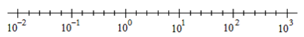
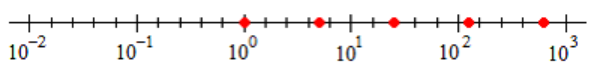
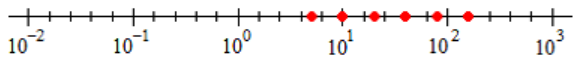
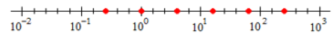

Section 5.4 Log Scales
Subsection 1. Compare quantities with logarithms
Because \(\log {x}\) grows very slowly, we can use logs to compare quantities that vary greatly in magnitude.
Subsubsection Example
Example 5.33.
Complete the table. Round the values to one decimal place.
\(x\) \(~1~\) \(~5~\) \(25\) \(125\) \(625\) \(\log x\) \(\) \(\) \(\) \(\) \(\) - Plot the values of \(x\) on a log scale. 
- Each time we multiply \(x\) by 5, how much does the logarithm increase? What is \(\log 5\text{,}\) to one decimal place?
\(x\) \(~1~\) \(~5~\) \(25\) \(125\) \(625\) \(\log x\) \(0\) \(0.7\) \(1.4\) \(2.1\) \(2.8\) - 
- Each time we multiply \(x\) by 5, the log of \(x\) increases by 0.7, because \(\log 5 = 0.7\text{.}\) This is an application of the log properties:\begin{equation*} \log 5x = \log x + \log 5 = \log x + 0.7 \end{equation*}
Subsubsection Exercises
Notebook 5.34.
Complete the table. Round the values to one decimal place.
\(x\) \(~5~\) \(~10~\) \(~20~\) \(~40~\) \(~80~\) \(\log x\) \(\) \(\) \(\) \(\) \(\) - Plot the values of \(x\) on a log scale.
- Each time we multiply \(x\) by 2, how much does the logarithm increase? What is \(\log 2\text{,}\) to one decimal place?
\(x\) \(~5~\) \(~10~\) \(~20~\) \(~40~\) \(~80~\) \(\log x\) \(0.7\) \(1\) \(1.3\) \(1.6\) \(1.9\) - 
- \(\displaystyle 0.3;~0.3\)
Notebook 5.35.
Complete the table. Round the values to one decimal place.
\(x\) \(0.25\) \(~1~\) \(~4~\) \(~16~\) \(~64~\) \(256\) \(\log x\) \(\) \(\) \(\) \(\) \(\) \(\) - Plot the values of \(x\) on a log scale.
- Each time we multiply \(x\) by 4, how much does the logarithm increase? What is \(\log 4\text{,}\) to one decimal place?
\(x\) \(0.25\) \(~1~\) \(~4~\) \(~16~\) \(~64~\) \(256\) \(\log x\) \(-0.6\) \(0\) \(0.6\) \(1.2\) \(1.8\) \(2.4\) - 
- \(\displaystyle 0.6;~0.6\)
Subsection 2. Use the properties of logarithms
The three properties of lagarithms are helpful in making computations involving logs. If \(x\text{,}\) \(y\text{,}\) \(b \gt 0\text{,}\) and \(b\ne 1\text{,}\) then \(\displaystyle \log_{b}{(xy)} = \log_{b}{x} + \log_{b}{y}\) \(\displaystyle \log_{b}\dfrac{x}{y} = \log_b x - \log_b y\) \(\displaystyle \log_b {x^k} = k \log_b x \)Properties of Logarithms.
Subsubsection Examples
Example 5.36.
If \(\log_b 10 = 2.303\) and \(\log_b 2 = 0.693\text{,}\) what is \(\log_b 5\text{?}\)
Because \(5 = \dfrac{10}{2}\text{,}\)
Example 5.37.
If \(\log_b 10 = 2.303\) and \(\log_b 2 = 0.693\text{,}\) what is \(\log_b 20\text{?}\)
Because \(20 = 10 \cdot 2\text{,}\)
Subsubsection Exercises
Notebook 5.38.
Take the log of each number. What do you notice?
- \(\displaystyle 8 \cdot 100 = 800\)
- \(\displaystyle 12 \cdot 1000 = 12,000\)
- \(\displaystyle 20 \cdot 25 = 500\)
- \(\displaystyle 200 \cdot 250 = 50,000\)
- \(\displaystyle \log 8 + \log 10 = \log 800\)
- \(\displaystyle \log 12 + \log 100 = \log 12,000\)
- \(\displaystyle \log 20 + \log 25 = \log 500\)
- \(\displaystyle \log 200 + \log 250 = \log 50,000\)
Notebook 5.39.
Compare the two operations. What do you notice?
- (i) Compute \(10^{2.68}~~~~~~~~~~~~~~~~~\) (ii) Solve for \(x:~~\log x = 2.68\)
- (i) Compute \(10^{-0.75}~~~~~~~~~~~~~~~~\) (ii) Solve for \(x:~~\log x = -0.75\)
- (i) and (ii) have the same answer: \(478.63\)
- (i) and (ii) have the same answer: \(0.1778\)
Notebook 5.40.
- The ratio of \(N\) to \(P\) is \(32.6\text{.}\) Compute \(\log N - \log P\text{.}\)
- \(\log z - \log t = 2.5\text{.}\) Compute \(\dfrac{z}{t}\text{.}\)
- \(\displaystyle 1.5132\)
- \(\displaystyle 316.2278\)
Subsection 3. Write expressions to compare quantities
There is often more than one way to express a comparison with mathematical notation.
Subsubsection Example
Example 5.41.
When we say that "\(A\) is 3 times larger than \(B\text{,}\)" we mean that \(A=3B\text{.}\)
Example 5.42.
When we say that "\(A\) is 3 more than \(B\text{,}\)" we mean that \(A=B+3\text{.}\)
Subsubsection Exercises
- \(\displaystyle x=5H\)
- \(\displaystyle x=\dfrac{5}{H}\)
- \(\displaystyle x=5+H\)
- \(\displaystyle H=x+5\)
- \(\displaystyle H=5x\)
- \(\displaystyle H=\dfrac{5}{x}\)
- \(\displaystyle x-H=5\)
- \(\displaystyle H-x=5\)
- \(\displaystyle \dfrac{x}{H}=5\)
- \(\displaystyle \dfrac{H}{x}=5\)
- \(\displaystyle \dfrac{\log x}{\log H} = 5\)
- \(\displaystyle \log x - \log H =\log 5\)
- \(\displaystyle \log x + \log 5 = \log H\)
Notebook 5.43.
From the list above, match all the correct algebraic expressions to the phrase "\(x\) is 5 times as large as \(H\text{.}\)"
Notebook 5.44.
From the list above, match all the correct algebraic expressions to the phrase "\(x\) is 5 more than \(H\text{.}\)"